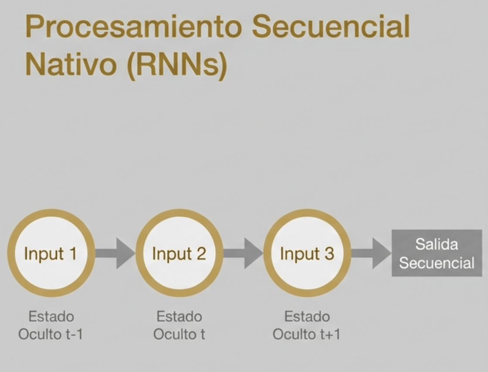
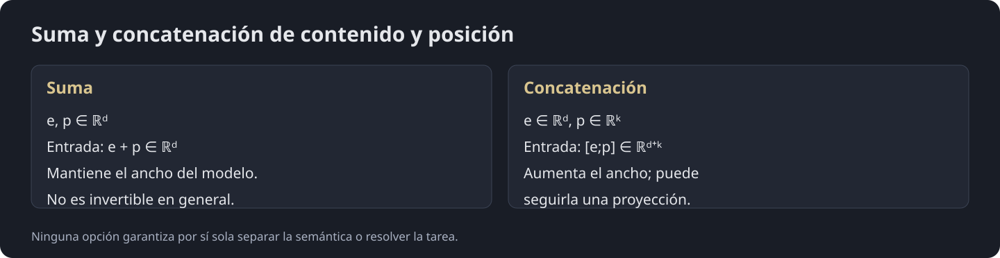
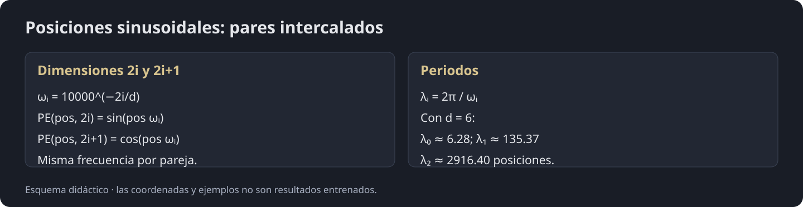
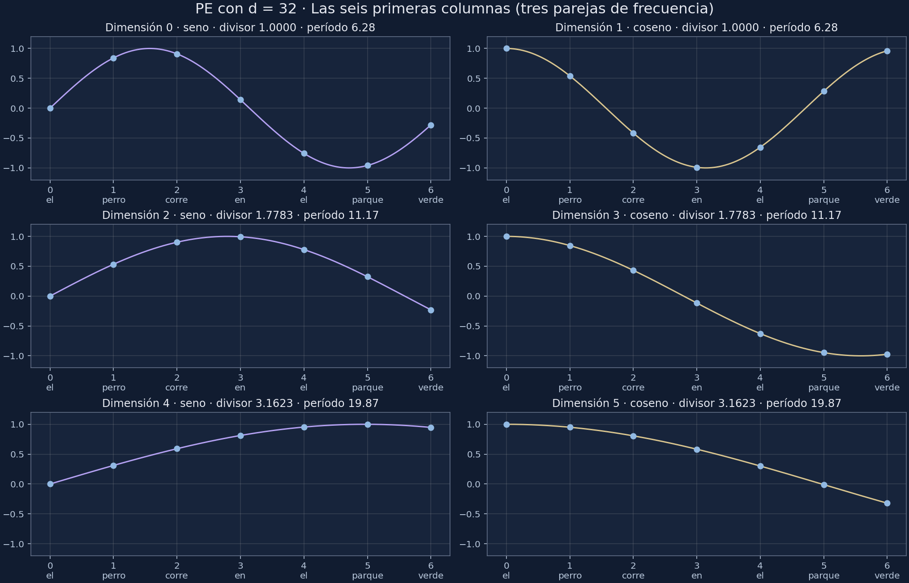
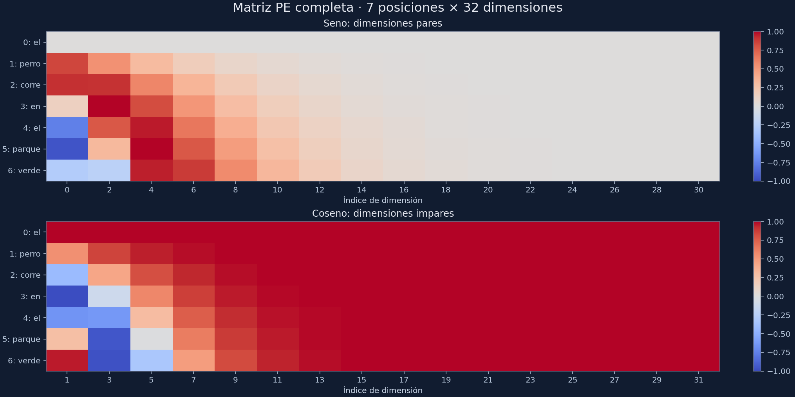
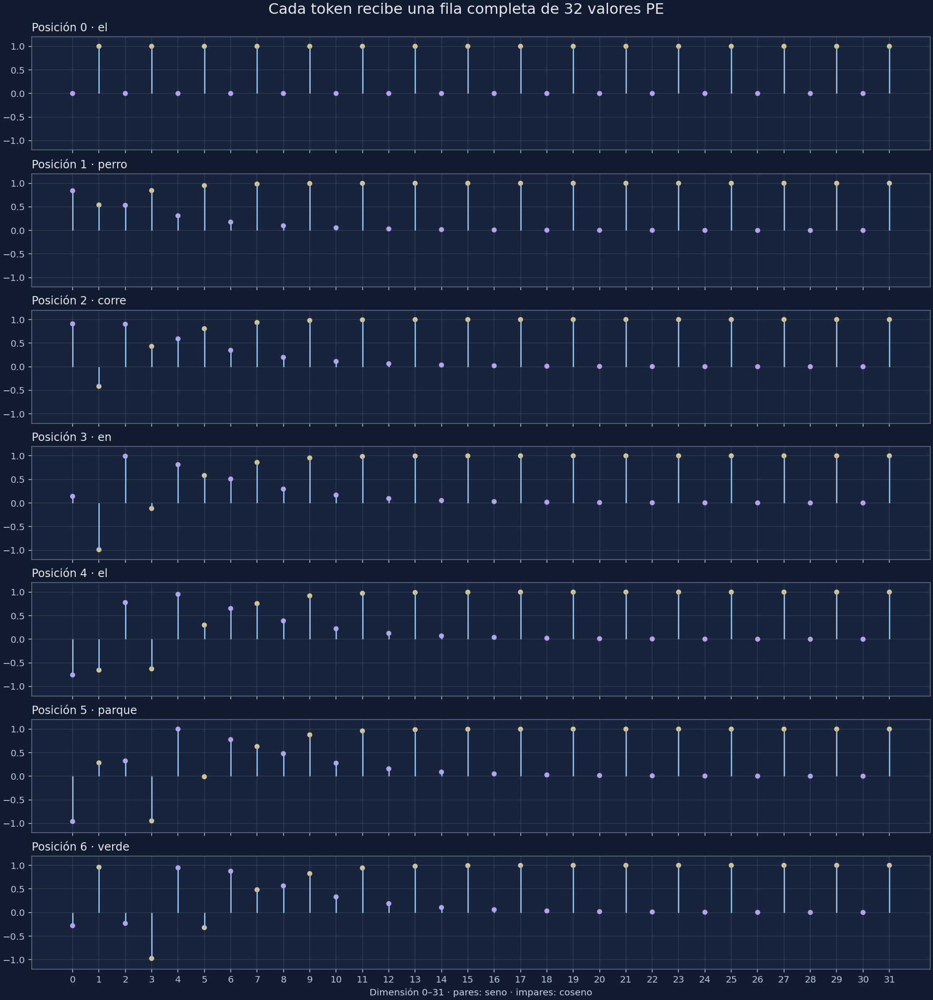
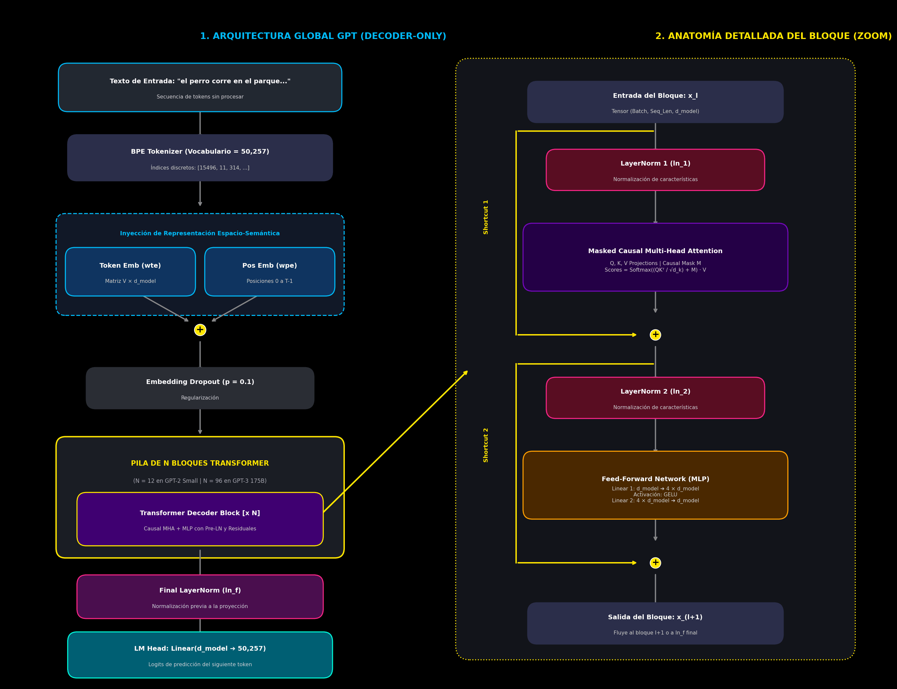
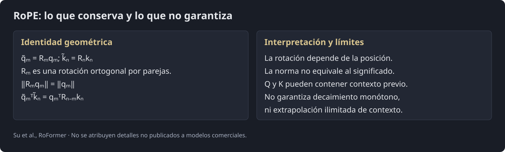
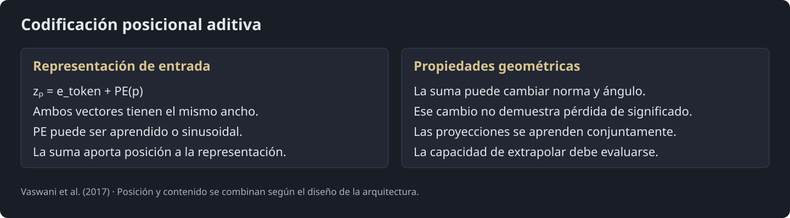

Procesamiento del Lenguaje Natural y Reconocimiento del Habla · Clase 13
13 · Introducción a GPT - RoPE - Parte 2
Contenido convertido sin ejecutar Python. Se conservan las salidas guardadas; las figuras matemáticas sustituidas y los gráficos de PE están identificados en el registro de revisión.
11.1. Equivariancia a la permutación en self-attention
11.1.1. El Problema del Saco de Palabras
En una arquitectura recurrente tradicional (RNN/LSTM), el tiempo y el orden están implícitos en la naturaleza secuencial del cómputo: el paso no puede calcularse sin conocer el estado oculto .

Sin embargo, el motor central del Transformer, el Scaled Dot-Product Self-Attention, calcula la atención entre todos los pares de tokens en paralelo mediante operaciones matriciales:
Si permutamos el orden de las palabras de la secuencia de entrada mediante una matriz de permutación , las matrices de Queries y Keys producen:
Sin posiciones ni máscara dependiente del orden, la atención por filas verifica . Al permutar los tokens se permutan las filas de salida: es equivariancia, no invariancia. Una agregación simétrica posterior puede producir invariancia. La propiedad no se aplica sin cambios a una máscara causal fija.
Self-attention sin información posicional y sin máscara de orden es equivariante a permutaciones. Los vectores por token cambian de lugar con la entrada. Incorporar posiciones permite distinguir órdenes; una máscara causal también introduce estructura de orden.
11.2. Decisión Arquitectónica: Suma vs. Concatenación
11.2.1. ¿Por qué sumar ?
La suma mantiene constante y permite usar las mismas dimensiones en las capas posteriores. Concatenar también es posible, pero cambia el ancho salvo que se añada una proyección. La suma no es invertible en general y no garantiza separar perfectamente contenido y posición. Los parámetros se aprenden con esa representación conjunta; no se presupone ortogonalidad entre ambos componentes.

11.3. Formulación Matemática de la Codificación Sinusoidal
11.3.1. Las ecuaciones sinusoidales
es el índice del token e el índice del par seno–coseno. La base 10000 controla el rango de frecuencias: , no una longitud máxima exactamente igual a 10000. Seno y coseno están intercalados por dimensiones en esta convención.

11.3.1.1. Propiedad de desplazamiento lineal
Cada par seno–coseno admite una transformación lineal para un desplazamiento fijo :
Esto facilita representar desplazamientos, pero no obliga al producto punto de consultas y claves aprendidas a depender solo de la distancia relativa. RoPE impone esa estructura de manera explícita en sus rotaciones.
Presevando la Señal: Conexiones Residuales
11.3.1.2. Ejemplo Numérico
Para entender cómo se distribuyen las funciones trigonométricas en las dimensiones del vector, conviene analizar el rol exacto de los índices , y , y luego desarrollar el cálculo numérico completo con
1. El Significado de , y
Un vector de embedding de tamaño tiene 6 componentes escalares indexados del al :
El algoritmo de Vaswani et al. no asigna una frecuencia distinta a cada una de las 6 dimensiones por separado. En su lugar, las agrupa en parejas (un par seno-coseno por cada frecuencia angular ) para formar planos bidimensionales de rotación:
(Índice de la frecuencia o pareja): Recorre las parejas de dimensiones. Como cada pareja consume 2 posiciones del vector, va desde hasta . Con :
(Dimensión par): Selecciona el índice par del vector donde se evalúa la función seno.
(Dimensión impar): Selecciona el índice impar consecutivo donde se evalúa la función coseno con la misma frecuencia que su dimensión par compañera.
Las 3 parejas () cubren los 6 índices del vector: .
2. Cálculo de los Denominadores (Escalas de Longitud de Onda)
La fórmula oficial define el divisor de cada frecuencia con la base escalar :
Calculamos el divisor para cada valor de :
Para :
Para :
Para :
A medida que crece, el divisor se hace más grande, lo que genera frecuencias más lentas para capturar distancias más amplias en el texto.
3. Cálculo de Todos los Componentes para
Tomemos el token en la posición (por ejemplo, la palabra "perro" en "el perro corre..."). Evaluamos cada índice en radianes:
Pareja (Índices 0 y 1):
Dimensión 0 (, par ):
Dimensión 1 (, impar ):
Pareja (Índices 2 y 3):
Ángulo:
Dimensión 2 (, par ):
Dimensión 3 (, impar ):
Pareja (Índices 4 y 5):
Ángulo:
Dimensión 4 (, par ):
Dimensión 5 (, impar ):
Vector Posicional Resultante:
4. Comparación con
Para comprobar la consistencia matemática, si evaluamos la primera palabra de la secuencia (, como "el"):
La matriz de Positional Encoding tiene una estructura bidimensional fija:
Filas: Representan el índice temporal de cada palabra o token ().
Columnas: Representan las dimensiones del espacio de embedding ().
Al alimentar el Transformer, el recorrido es fila por fila. Cada token de entrada tiene su propio vector semántico que necesita sumarse con el vector de su posición exacta:
El modelo toma la fila completa (un vector de 6 números) y se la suma a la fila de la matriz de embeddings.
11.3.1.3. Ejemplo Numérico - PyTorch
Celda 1: Setup, FastText () y Matriz PE Vectorizada
Código Python · celda 34
!pipinstall-qfasttext
Código Python · celda 35
importreimportfasttextimportmatplotlib.pyplotaspltimportnumpyasnpimportseabornassnsimporttorchimporttorch.nnasnnimporttorch.nn.functionalasFfromtorch.utils.dataimportDataLoader,Dataset# Configuración de reproducibilidadtorch.manual_seed(42)np.random.seed(42)iftorch.cuda.is_available():torch.cuda.manual_seed_all(42)# Configuración del dispositivo de cómputodevice=torch.device("cuda"iftorch.cuda.is_available()else"cpu")print(f"Entorno configurado. Dispositivo de ejecución: {device}")
Entorno configurado. Dispositivo de ejecución: cpu
Código Python · celda 36
# Dataset de entrenamiento clasificado por idiomacorpus_data={"Spanish":["hola como estas mi querido amigo","el perro corre en el parque verde","la casa grande tiene ventanas abiertas","vamos a comer comida deliciosa hoy","la musica suena muy bien en la fiesta","el tiempo vuela cuando estamos juntos","el sol brilla fuerte en la playa","el trabajo en la ciudad es agotador"],"English":["hello how are you my dear friend","the dog runs in the green park","the big house has open windows","we are going to eat delicious food today","the music sounds great at the party","time flies when we are together","the sun shines bright on the beach","working in the city is very tiring"],"German":["hallo wie geht es dir mein freund","der hund laeuft in dem gruenen park","das grosse haus hat offene fenster","wir werden heute leckeres essen geniessen","die musik klingt toll auf der feier","die zeit vergeht schnell wenn wir zusammen sind","die sonne scheint hell am strand","die arbeit in der stadt ist sehr anstrengend"]}# 1. Escritura del corpus en un archivo de texto plano para la API de Metacorpus_filename="train_corpus.txt"withopen(corpus_filename,"w",encoding="utf-8")asf:forsentencesincorpus_data.values():forsentenceinsentences:f.write(sentence.lower()+"\n")# 2. Entrenamiento del modelo oficial de FastTextembedding_dim=32ft_model=fasttext.train_unsupervised(input=corpus_filename,model="skipgram",dim=embedding_dim,minn=2,# Tamaño mínimo de n-gramas de caracteresmaxn=4,# Tamaño máximo de n-gramas de caracteresepoch=100,lr=0.1,thread=2)# 3. Frase de evaluaciónsentence="el perro corre en el parque verde"tokens=sentence.split()seq_len=len(tokens)# 4. Cálculo Vectorizado de Positional Encodingdefbuild_pe_matrix(seq_len,d_model,n=10000.0):pe=np.zeros((seq_len,d_model),dtype=np.float32)forposinrange(seq_len):foriinrange(d_model//2):denom=np.power(n,(2*i)/d_model)pe[pos,2*i]=np.sin(pos/denom)pe[pos,2*i+1]=np.cos(pos/denom)returnpePE_matrix=build_pe_matrix(seq_len,embedding_dim)print(f"Modelo FastText listo (d_model = {embedding_dim}).")print(f"Tokens analizados ({seq_len}): {tokens}")print(f"Matriz PE generada: Forma {PE_matrix.shape}")
Celda 2:Visión por Columnas – Cada Onda en su Propio Subplot
Cada dimensión es una columna. Esta gráfica genera 6 subplots individuales dispuestos en una cuadrícula :
Columna izquierda: Dimensiones pares () calculadas con función seno.
Columna derecha: Dimensiones impares () calculadas con función coseno.
Cada punto resalta el instante exacto donde se muestrea cada palabra de la frase.
Código Python · celda 38
# =====================================================================# CELDA 2: Desglose por Columnas (Onda Individual por Dimensión)# =====================================================================plt.style.use('dark_background')fig,axes=plt.subplots(3,2,figsize=(18,13),sharex=True)# Parámetros continuos para dibujar la onda suavepos_cont=np.linspace(-0.2,seq_len-0.8,600)# Paleta luminosa de alto contrastecolors_sin=['#00F5D4','#00BBF9','#70E000']# Tonos aqua/cian/lima para Senocolors_cos=['#F72585','#7209B7','#FF9E00']# Tonos magenta/púrpura/naranja para Cosenotoken_colors=['#FFFFFF','#FFE600','#FF5400','#00F5D4','#70E000','#F72585','#4CC9F0']foriinrange(3):denom=10000.0**((2*i)/embedding_dim)# --- DIMENSIÓN PAR (2i) -> SENO ---dim_par=2*iax_sin=axes[i,0]onda_sin=np.sin(pos_cont/denom)puntos_sin=PE_matrix[:,dim_par]# Curva continua con efecto haloax_sin.plot(pos_cont,onda_sin,color=colors_sin[i],linewidth=2.5,label=f"Onda continua (denom={denom:.1f})")ax_sin.plot(pos_cont,onda_sin,color=colors_sin[i],linewidth=7.0,alpha=0.25)# Muestreo discreto de cada palabraforpinrange(seq_len):ax_sin.vlines(p,0,puntos_sin[p],color='gray',linestyle=':',alpha=0.7)ax_sin.scatter(p,puntos_sin[p],color=token_colors[p],s=95,zorder=5,edgecolors='white',linewidth=1.5)ax_sin.annotate(f"{tokens[p]}\n({puntos_sin[p]:.2f})",(p,puntos_sin[p]+(0.18ifpuntos_sin[p]>=0else-0.32)),ha='center',fontsize=8.5,fontweight='bold',color=token_colors[p])ax_sin.set_title(f"COLUMNA {dim_par} | Par: SENO (i={i}) | Longitud de onda ~ {denom*2*np.pi:.1f}",fontsize=11,fontweight='bold',pad=10,color='#E0E0E0')ax_sin.set_ylabel("Valor PE [-1, +1]",fontsize=9.5)ax_sin.set_ylim(-1.45,1.45)ax_sin.axhline(0,color='white',linewidth=0.6,alpha=0.3)ax_sin.grid(True,linestyle='--',alpha=0.2)ax_sin.legend(loc='lower right',fontsize=8,framealpha=0.3)# --- DIMENSIÓN IMPAR (2i+1) -> COSENO ---dim_impar=2*i+1ax_cos=axes[i,1]onda_cos=np.cos(pos_cont/denom)puntos_cos=PE_matrix[:,dim_impar]# Curva continua con efecto haloax_cos.plot(pos_cont,onda_cos,color=colors_cos[i],linewidth=2.5,linestyle='--',label=f"Onda continua (denom={denom:.1f})")ax_cos.plot(pos_cont,onda_cos,color=colors_cos[i],linewidth=7.0,alpha=0.25)# Muestreo discreto de cada palabraforpinrange(seq_len):ax_cos.vlines(p,0,puntos_cos[p],color='gray',linestyle=':',alpha=0.7)ax_cos.scatter(p,puntos_cos[p],color=token_colors[p],s=95,zorder=5,edgecolors='white',linewidth=1.5)ax_cos.annotate(f"{tokens[p]}\n({puntos_cos[p]:.2f})",(p,puntos_cos[p]+(0.18ifpuntos_cos[p]>=0else-0.32)),ha='center',fontsize=8.5,fontweight='bold',color=token_colors[p])ax_cos.set_title(f"COLUMNA {dim_impar} | Impar: COSENO (i={i}) | Longitud de onda ~ {denom*2*np.pi:.1f}",fontsize=11,fontweight='bold',pad=10,color='#E0E0E0')ax_cos.set_ylim(-1.45,1.45)ax_cos.axhline(0,color='white',linewidth=0.6,alpha=0.3)ax_cos.grid(True,linestyle='--',alpha=0.2)ax_cos.legend(loc='lower right',fontsize=8,framealpha=0.3)# Ejes X inferioresaxes[2,0].set_xlabel("Índice Temporal de Posición (pos)",fontsize=11,fontweight='bold')axes[2,1].set_xlabel("Índice Temporal de Posición (pos)",fontsize=11,fontweight='bold')axes[2,0].set_xticks(range(seq_len))axes[2,0].set_xticklabels([f"pos={p}\n'{tokens[p]}'"forpinrange(seq_len)],fontsize=9)axes[2,1].set_xticks(range(seq_len))axes[2,1].set_xticklabels([f"pos={p}\n'{tokens[p]}'"forpinrange(seq_len)],fontsize=9)plt.suptitle("DESGLOSE POR COLUMNAS: Muestreo de las 6 Ondas Sinusoidales Independientes",fontsize=14,fontweight='bold',y=0.995,color='#00F5D4')plt.tight_layout()plt.show()

Lectura de las ondas: cada pareja comparte frecuencia, con seno en la dimensión par y coseno en la impar. La pareja 0 tiene periodo posiciones; entre posiciones 0 y 6 recorre casi un ciclo. El ejemplo manual anterior usa ; el laboratorio siguiente usa , por lo que sus divisores son distintos.
Con , las dimensiones 0–5 usan divisores 1, 1.7783 y 3.1623, y periodos 6.28, 11.17 y 19.87. Para , sus seis primeras componentes son aproximadamente [-0.7568, -0.6536, 0.7783, -0.6276, 0.9536, 0.3011]. La fila completa tiene 32 valores. Esto distingue posiciones; no garantiza por sí solo resolver toda ambigüedad sintáctica. Las sinusoidales no son odómetros globalmente monótonos.
Código Python · celda 40
fig,axes=plt.subplots(2,1,figsize=(18,9),sharex=True)# Extraer senos (16 columnas) y cosenos (16 columnas) de la matriz de 32 dimensiones# (Asegúrate de que PE_matrix tenga shape [7, 32])pe_sin_32=PE_matrix[:,0::2]# shape: (7, 16)pe_cos_32=PE_matrix[:,1::2]# shape: (7, 16)# Panel Superior: Senosim0=axes[0].imshow(pe_sin_32,cmap='coolwarm',vmin=-1.0,vmax=1.0,aspect='auto')axes[0].set_title("1. TODAS LAS DIMENSIONES PARES: SENO (Dims 0, 2, 4, ..., 30)",fontsize=12,fontweight='bold',color='#00F5D4',pad=10)axes[0].set_yticks(range(seq_len))axes[0].set_yticklabels([f"pos={p}: '{tokens[p]}'"forpinrange(seq_len)],fontsize=9.5)fig.colorbar(im0,ax=axes[0],fraction=0.02,pad=0.02)# Panel Inferior: Cosenosim1=axes[1].imshow(pe_cos_32,cmap='coolwarm',vmin=-1.0,vmax=1.0,aspect='auto')axes[1].set_title("2. TODAS LAS DIMENSIONES IMPARES: COSENO (Dims 1, 3, 5, ..., 31)",fontsize=12,fontweight='bold',color='#F72585',pad=10)axes[1].set_yticks(range(seq_len))axes[1].set_yticklabels([f"pos={p}: '{tokens[p]}'"forpinrange(seq_len)],fontsize=9.5)axes[1].set_xticks(range(16))axes[1].set_xticklabels([f"i={i}"foriinrange(16)],fontsize=9)axes[1].set_xlabel("Índice de Pareja / Frecuencia (i = 0 a 15) ➔ [Frecuencias Altas a Bajas]",fontsize=11,fontweight='bold',color='#FFE600',labelpad=10)fig.colorbar(im1,ax=axes[1],fraction=0.02,pad=0.02)plt.tight_layout()plt.show()

Celda 3: visión por filas
Cada fila es un vector PE de 32 componentes, una por dimensión del embedding del laboratorio. Los seis primeros valores pueden compararse con las ondas seleccionadas; no deben confundirse con todo el vector ni con el ejemplo manual de .
Código Python · celda 42
# =====================================================================# CELDA 3: Desglose por Filas (El Vector PE(pos) de cada Palabra)# =====================================================================fig,axes=plt.subplots(seq_len,1,figsize=(14,15),sharex=True,sharey=True)dims=np.arange(embedding_dim)colores_barras=['#00F5D4','#F72585','#00BBF9','#7209B7','#70E000','#FF9E00']forpos_idxinrange(seq_len):ax=axes[pos_idx]valores_fila=PE_matrix[pos_idx]# Gráfica de aguja/lollipopmarkerline,stemlines,baseline=ax.stem(dims,valores_fila,linefmt='-',markerfmt='o',basefmt=" ")plt.setp(stemlines,color='#4CC9F0',linewidth=2.0)plt.setp(markerline,markersize=8,color='#FFE600',markeredgecolor='white',markeredgewidth=1.2)# Barra semitransparente de fondo para volumen visualax.bar(dims,valores_fila,color=colores_barras,alpha=0.35,width=0.35)# Etiquetas numéricas exactasford,valinenumerate(valores_fila):ax.text(d,val+(0.18ifval>=0else-0.32),f"{val:.3f}",ha='center',va='center',fontsize=9,fontweight='bold',color='white')ax.axhline(0,color='white',linewidth=0.8,alpha=0.4)ax.set_title(f"FILA {pos_idx} ➔ Vector PE para: '{tokens[pos_idx]}' (pos = {pos_idx})",fontsize=11,fontweight='bold',color=token_colors[pos_idx],loc='left')ax.set_ylabel("Valor",fontsize=9)ax.set_ylim(-1.3,1.3)ax.grid(True,linestyle=':',alpha=0.25)axes[-1].set_xticks(dims)axes[-1].set_xticklabels([f"Dim {d}\n({'sin'ifd%2==0else'cos'}, i={d//2})"fordindims],fontsize=10,fontweight='bold')axes[-1].set_xlabel("Índice de Dimensión del Embedding (Columnas 0 a 31)",fontsize=11,fontweight='bold')plt.suptitle("DESGLOSE POR FILAS: El vector de 32 dimensiones de cada token",fontsize=14,fontweight='bold',y=0.995,color='#FFE600')plt.tight_layout()plt.show()

12. Arquitectura GPT: Anatomía Completa del Decodificador Autorregresivo

12.1. La Filosofía Autorregresiva
Transformer Original (Vaswani et al., 2017): Concebido para traducción automática mediante una estructura Encoder-Decoder, donde el codificador procesa la secuencia de entrada bidireccionalmente y el decodificador genera la salida paso a paso.
BERT (Encoder-Only): Utiliza únicamente el codificador para aprender representaciones bidireccionales mediante Masked Language Modeling (MLM). Excelente para extracción de características, pero no diseñado para generación autoregresiva token a token.
GPT (Decoder-Only):Elimina el codificador y la atención cruzada (Cross-Attention), empleando exclusivamente una pila de bloques decodificadores causales. Su única tarea es predecir el siguiente token dada la historia pasada.

RoPE en la atención
RoPE aplica una rotación por parejas de coordenadas a consultas y claves. Conserva la norma de cada vector rotado y hace que el factor de rotación en su producto escalar dependa del desplazamiento relativo. Estas propiedades geométricas no garantizan preservar un significado, mejorar la tarea ni estabilizar toda la red.
13.1. El Problema de las Direcciones Absolutas (Absolute Positional Embeddings)
13.1. La Filosofía de la "Dirección Postal"
En los primeros modelos Transformer como BERT o GPT-2, la posición de un token se gestionaba asignando una "dirección postal" absoluta e independiente a cada índice de la secuencia.
La fórmula tradicional sumaba directamente el embedding de contenido con el embedding de posición:
Para una frase como "the red car", la matemática clásica operaba de la siguiente forma:
Posición 0 ("the"):
Posición 1 ("red"):
Posición 2 ("car"):

Posición y representación
RoPE aplica una rotación por parejas de coordenadas a consultas y claves. Conserva la norma de cada vector rotado y hace que el factor de rotación en su producto escalar dependa del desplazamiento relativo. Estas propiedades geométricas no garantizan preservar un significado, mejorar la tarea ni estabilizar toda la red.
RoPE aplica una rotación por parejas de coordenadas a consultas y claves. Conserva la norma de cada vector rotado y hace que el factor de rotación en su producto escalar dependa del desplazamiento relativo. Estas propiedades geométricas no garantizan preservar un significado, mejorar la tarea ni estabilizar toda la red.
Sumar un vector de posición puede cambiar la norma y la dirección del embedding de entrada. El modelo se entrena con esa representación conjunta: el cambio geométrico no demuestra corrupción del significado. Tampoco requiere por definición añadir parámetros especiales para reconocer cada palabra en cada índice. La posición es una señal útil para interpretar el orden.
Si , el ángulo entre y puede cambiar, siempre que ambos sean no nulos. Es una comparación geométrica entre vectores. Llamar «corrupto» al resultado presupone una pérdida semántica que este cálculo no demuestra: las capas posteriores se entrenan para procesar contenido y posición juntos.
Sumar puede cambiar norma y dirección. Esto es una propiedad geométrica, no una demostración de pérdida de identidad ni de colapso semántico: el modelo se entrena con esa entrada. Un ángulo ilustrativo de 40° no demuestra deterioro general de los sinónimos.
RoPE rota pares de coordenadas de Q y K y conserva sus normas. La identidad hace que la parte rotatoria del producto punto dependa del desplazamiento relativo. No garantiza por sí sola extrapolación ilimitada ni mejor rendimiento en cualquier tarea.
3. Visualización en PyTorch
Código Python · celda 64
# ==============================================================================# VISUALIZADOR GEOMÉTRICO AVANZADO: EFECTO GEOMÉTRICO DE APE (VASWANI ET AL., 2017)# ==============================================================================importnumpyasnpimportplotly.graph_objectsasgofromplotly.subplotsimportmake_subplots# ------------------------------------------------------------------------------# 1. FORMULACIÓN OFICIAL DE POSITIONAL ENCODING# ------------------------------------------------------------------------------defget_original_pe(pos:int,d_model:int=4)->np.ndarray:"""Implementación oficial Vaswani et al. (2017) evaluada en 3 dimensiones."""pe=np.zeros(d_model)foriinrange(0,d_model,2):denominator=10000.0**(i/d_model)pe[i]=np.sin(pos/denominator)pe[i+1]=np.cos(pos/denominator)returnpe[:3]# Truncado a R^3 para representación visual# ------------------------------------------------------------------------------# 2. ESPACIO SEMÁNTICO Y CLÚSTER BASE# ------------------------------------------------------------------------------np.random.seed(42)v_perro=np.array([2.4,0.6,1.2])norm_original=np.linalg.norm(v_perro)# Variedad parabólica de referencia semánticau=np.linspace(-3.2,3.2,30)v=np.linspace(-3.2,3.2,30)U,V=np.meshgrid(u,v)Z_semantico=0.07*(U**2+V**2)# Clúster de animales vecinos en reposo posicionaln_muestras=16nube_ruido=np.random.normal(loc=0.0,scale=0.22,size=(n_muestras,3))cluster_anim_puro=v_perro+nube_ruido# Clúster fragmentado: cada token recibe una posición ordinal icluster_anim_corrupto=np.zeros_like(cluster_anim_puro)foridxinrange(n_muestras):cluster_anim_corrupto[idx]=cluster_anim_puro[idx]+get_original_pe(pos=idx,d_model=4)# Ondulación continua de Fourier sobre la variedad en el panel derechoomega_0=1.0/(10000.0**(0/4))# Canal rápido (i=0) = 1.0omega_1=1.0/(10000.0**(2/4))# Canal lento (i=1) = 0.01Z_deformado=Z_semantico+0.75*np.sin(omega_0*U)+0.75*np.cos(omega_1*V)# ------------------------------------------------------------------------------# 3. CASQUETE DE ISONORMA (ESFERA DE ENERGÍA SEMÁNTICA CONSTANTE)# ------------------------------------------------------------------------------theta_sph=np.linspace(0,np.pi/2,20)phi_sph=np.linspace(0,np.pi/2,20)THETA,PHI=np.meshgrid(theta_sph,phi_sph)X_sph=norm_original*np.sin(THETA)*np.cos(PHI)Y_sph=norm_original*np.sin(THETA)*np.sin(PHI)Z_sph=norm_original*np.cos(THETA)# ------------------------------------------------------------------------------# 4. CONFIGURACIÓN DEL LIENZO DUAL# ------------------------------------------------------------------------------fig=make_subplots(rows=1,cols=2,specs=[[{'type':'surface'},{'type':'surface'}]],subplot_titles=("<b>(1) Variedad Semántica Pura</b><br><sup>Geometría intrínseca | Clúster cohesionado | Norma estable</sup>","<b>(2) Deformación Aditiva APE (x + p)</b><br><sup>Ruptura de isonorma | Deflexión angular | Clúster disperso</sup>"),horizontal_spacing=0.04)# ==============================================================================# PANEL IZQUIERDO: ESTADO PURO# ==============================================================================# Variedad basefig.add_trace(go.Surface(x=U,y=V,z=Z_semantico,colorscale='Viridis',opacity=0.25,showscale=False),row=1,col=1)# Casquete de isonorma de referenciafig.add_trace(go.Surface(x=X_sph,y=Y_sph,z=Z_sph,colorscale='Blues',opacity=0.15,showscale=False,hoverinfo='none'),row=1,col=1)# Enlace centroide-tokens del clúster (cohesión semántica)forpincluster_anim_puro:fig.add_trace(go.Scatter3d(x=[v_perro[0],p[0]],y=[v_perro[1],p[1]],z=[v_perro[2],p[2]],mode='lines',line=dict(color='#00F5D4',width=1.5),hoverinfo='none',showlegend=False),row=1,col=1)# Puntos del clústerfig.add_trace(go.Scatter3d(x=cluster_anim_puro[:,0],y=cluster_anim_puro[:,1],z=cluster_anim_puro[:,2],mode='markers',marker=dict(size=4.5,color='#00F5D4',line=dict(color='white',width=1)),name='Clúster Animales (Puro)'),row=1,col=1)# Vector v_perrofig.add_trace(go.Scatter3d(x=[0,v_perro[0]],y=[0,v_perro[1]],z=[0,v_perro[2]],mode='lines',line=dict(color='#00F0FF',width=6.5),name=f"'perro' base (||x||={norm_original:.2f})"),row=1,col=1)# Cono director de puntafig.add_trace(go.Cone(x=[v_perro[0]],y=[v_perro[1]],z=[v_perro[2]],u=[v_perro[0]*0.15],v=[v_perro[1]*0.15],w=[v_perro[2]*0.15],sizemode="absolute",sizeref=0.25,anchor="tail",colorscale=[[0,'#00F0FF'],[1,'#00F0FF']],showscale=False,hoverinfo='none'),row=1,col=1)# ==============================================================================# PANEL DERECHO: ESPACIO DESPLAZADO POR APE# ==============================================================================# Superficie ondulada por frecuencias sinusoidalesfig.add_trace(go.Surface(x=U,y=V,z=Z_deformado,colorscale='Magma',opacity=0.32,showscale=False),row=1,col=2)# Casquete de isonorma (para verificar distorsión radial)fig.add_trace(go.Surface(x=X_sph,y=Y_sph,z=Z_sph,colorscale='Blues',opacity=0.15,showscale=False,hoverinfo='none'),row=1,col=2)# VECTOR FANTASMA: Referencia original en el espacio corruptofig.add_trace(go.Scatter3d(x=[0,v_perro[0]],y=[0,v_perro[1]],z=[0,v_perro[2]],mode='lines',line=dict(color='#00F0FF',width=3,dash='dash'),name="Referencia 'perro' (Ghost Puro)"),row=1,col=2)# Clúster fragmentadofig.add_trace(go.Scatter3d(x=cluster_anim_corrupto[:,0],y=cluster_anim_corrupto[:,1],z=cluster_anim_corrupto[:,2],mode='markers',marker=dict(size=4.5,color='#FF007F',line=dict(color='white',width=1)),name='Clúster dispersado por PE(pos)'),row=1,col=2)# Vectores evaluados y descomposición paralelográmicaposiciones=[1,7,18]colores_pos={1:'#FFE600',7:'#FF8800',18:'#FF0055'}forposinposiciones:pe_vec=get_original_pe(pos=pos,d_model=4)v_corr=v_perro+pe_vecnorm_c=np.linalg.norm(v_corr)delta_norm=norm_c-norm_originalsim=np.dot(v_perro,v_corr)/(norm_original*norm_c)deflex_ang=np.degrees(np.arccos(np.clip(sim,-1.0,1.0)))# Vector resultante x̃ = x + pfig.add_trace(go.Scatter3d(x=[0,v_corr[0]],y=[0,v_corr[1]],z=[0,v_corr[2]],mode='lines',line=dict(color=colores_pos[pos],width=6),name=f"pos={pos} (Δθ={deflex_ang:.1f}°, Δ||x||={delta_norm:+.2f})",hovertext=(f"<b>'perro' en pos={pos}</b><br>"f"Deflexión angular (Δθ): {deflex_ang:.2f}°<br>"f"Norma alterada: {norm_c:.2f} (Base: {norm_original:.2f})<br>"f"Similitud de Coseno: {sim:.3f}"),hoverinfo='text'),row=1,col=2)# Cono de punta para x̃fig.add_trace(go.Cone(x=[v_corr[0]],y=[v_corr[1]],z=[v_corr[2]],u=[v_corr[0]*0.15],v=[v_corr[1]*0.15],w=[v_corr[2]*0.15],sizemode="absolute",sizeref=0.25,anchor="tail",colorscale=[[0,colores_pos[pos]],[1,colores_pos[pos]]],showscale=False,hoverinfo='none'),row=1,col=2)# Vector de traslación p (paralelogramo x -> x + p)fig.add_trace(go.Scatter3d(x=[v_perro[0],v_corr[0]],y=[v_perro[1],v_corr[1]],z=[v_perro[2],v_corr[2]],mode='lines',line=dict(color=colores_pos[pos],width=2.5,dash='dot'),hovertext=f"Vector de Posición p_{pos} inyectado",hoverinfo='text',showlegend=False),row=1,col=2)# ------------------------------------------------------------------------------# 5. ESTILO TÉCNICO Y CONTROL DE CÁMARA# ------------------------------------------------------------------------------ejes=dict(showbackground=True,backgroundcolor='#0B0E14',gridcolor='#1A2233',zerolinecolor='#00F0FF',showticklabels=False,title='')camara_optima=dict(eye=dict(x=-1.5,y=-1.55,z=1.05))fig.update_layout(template="plotly_dark",paper_bgcolor='#06080C',title=dict(text="<b>DISTORSIÓN DE LA GEOMETRÍA LATENTE: SUMA ADITIVA (APE) vs. ESPACIO PURO</b><br>""<sup>Observa cómo la suma desplaza los vectores fuera del cascarón de isonorma azul y fractura la cohesión del clúster</sup>",x=0.5,y=0.96,font=dict(size=14,color="#FFFFFF")),margin=dict(l=10,r=10,b=20,t=85),height=720,legend=dict(orientation="h",yanchor="bottom",y=-0.06,xanchor="center",x=0.5,font=dict(size=10),bgcolor="rgba(11,14,20,0.8)"),scene=dict(xaxis=ejes,yaxis=ejes,zaxis=ejes,camera=camara_optima,aspectmode='cube'),scene2=dict(xaxis=ejes,yaxis=ejes,zaxis=ejes,camera=camara_optima,aspectmode='cube'))fig.show()
Panel izquierdo: vectores sintéticos de referencia
Los puntos del ejemplo son una construcción geométrica, no embeddings entrenados ni una medición de sinonimia. Sirven para comparar el efecto de sumar posiciones con una referencia fija.
Panel derecho: efecto geométrico de sumar posiciones
La suma desplaza cada punto de forma diferente y puede cambiar su norma. El dibujo es ilustrativo: no prueba corrupción del lenguaje ni una pérdida de calidad de un Transformer entrenado.
13.1.2.2. Términos cruzados en la autoatención con posiciones aditivas
Con codificación aditiva, la primera capa puede calcular Q y K a partir de embeddings más posición. Las capas siguientes reciben representaciones contextuales, no de nuevo el embedding original. RoPE rota las proyecciones Q y K en las capas de atención que lo incorporan.
Por la propiedad distributiva de la multiplicación matriz-vector:
La afinidad de atención se calcula como el producto matricial entre el vector fila y el vector columna :
Aplicando la regla de transposición de una suma () y de un producto matricial ():
Sustituyendo en la expresión:
B. Expansión distributiva (4 combinaciones posibles)
Al multiplicar algebraicamente los dos binomios término a término (propiedad distributiva completa ):
Primer término ():
Segundo término ():
Tercer término ():
Cuarto término ():
Sumando los cuatro resultados se obtiene la expresión final:
Al calcular el producto punto de atención , la expresión se expande algebraicamente en cuatro sumandos:
2. Significado de los Términos
La expansión del producto de atención con posiciones aditivas contiene cuatro contribuciones:
Al distribuir aparecen contenido–contenido, contenido–posición, posición–contenido y posición–posición. Los términos cruzados no son necesariamente ruido: sus pesos se aprenden y pueden ayudar a utilizar el orden. Esta identidad no prueba que el modelo pierda significado o desperdicie capacidad.
RoPE aplica una rotación por parejas de coordenadas a consultas y claves. Conserva la norma de cada vector rotado y hace que el factor de rotación en su producto escalar dependa del desplazamiento relativo. Estas propiedades geométricas no garantizan preservar un significado, mejorar la tarea ni estabilizar toda la red.
En las secuencias «Every day I walk my dog» e «I walk my dog every day», dog ocupa los índices 5 y 3, respectivamente, si se cuenta desde cero y se separa por espacios. Esto es un ejemplo de palabras, no una tokenización de subpalabras concreta.
Con posiciones absolutas cambia la representación de entrada de dog. No se deduce que el modelo deba reaprender desde cero la relación para cada posición: los parámetros se comparten. La extrapolación depende de la codificación, la arquitectura y el entrenamiento.
Los términos cruzados mezclan contenido y posición absoluta. Pueden ser aprendidos y útiles; no son necesariamente «parásitos». RoPE adopta otra parametrización que hace explícita la dependencia relativa en el producto de Q y K rotadas.
13.3.: La Intuición Fundamental – Rotar en Lugar de Sumar
13.3.1. El Deseo del Sistema Ideal
El objetivo deseado para el mecanismo de atención es simple:
La puntuación de atención entre dos palabras debe depender únicamente de dos factores: su contenido semántico (Queries y Keys ) y su distancia relativa , haciendo desaparecer las posiciones absolutas y .
Construcción rotatoria
RoPE aplica una rotación por parejas de coordenadas a consultas y claves. Conserva la norma de cada vector rotado y hace que el factor de rotación en su producto escalar dependa del desplazamiento relativo. Estas propiedades geométricas no garantizan preservar un significado, mejorar la tarea ni estabilizar toda la red.
¿Existe una función de codificación que inyecte la posición absoluta a un vector , tal que el producto escalar entre dos vectores codificados y dependa únicamente de los vectores originales y de su distancia relativa ?
Matemáticamente, buscamos la existencia de una función tal que:
Sujeto a la condición inicial de identidad en el origen:
Paso 1: Representación Polar en el Plano Complejo (
Cualquier vector bidimensional equivale a un número complejo . Aplicando la fórmula de Euler, se escribe en forma polar:
: La norma euclidiana del vector.
: El ángulo que forma el vector con el eje real.
: La unidad imaginaria ().
: Vector unitario sobre el círculo trigonométrico.
¿Por qué en el plano complejo?: Multiplicar en separa de forma natural la longitud y la dirección: los radios se multiplican y los ángulos se suman.
Paso 2: Definición del Operador Posicional
RoPE aplica una rotación por parejas de coordenadas a consultas y claves. Conserva la norma de cada vector rotado y hace que el factor de rotación en su producto escalar dependa del desplazamiento relativo. Estas propiedades geométricas no garantizan preservar un significado, mejorar la tarea ni estabilizar toda la red.
Paso 3: El Producto Interno y la Cancelación de Índices Absolutos
Identificamos una pareja real con . La rotación es . El producto escalar real de dos parejas corresponde a . Declarar esta convención evita cambiar el signo del desplazamiento por error.
El conjugado de un número complejo invierte el signo de su parte imaginaria, lo que en forma polar equivale a negar el exponente:
Paso 3.2. Multiplicación de términos
Multiplicando los radios y sumando los exponentes algebraicamente:
Agrupando los términos por significado:
Paso 3.3. Extracción de la parte real
Con vectores columna, . El factor rotatorio depende de ; los vectores q y k pueden contener información contextual y posicional procedente de otras capas. La identidad no elimina toda dependencia absoluta de un modelo completo.
Las parejas complejas son una forma compacta de escribir el cálculo. Se implementa también con productos y sumas reales; no es cierto que las GPU solo puedan operar con números reales. El coste depende de la implementación.
13.3.2. La Separación Geométrica (Geometric Split)
En la formulación habitual, RoPE aplica rotaciones a parejas de coordenadas de Q y K proyectadas. Si , la rotación conserva la norma porque es ortogonal.
Eso no separa «qué palabra es» en la longitud y «dónde está» en el ángulo: el contenido de un vector está distribuido entre sus coordenadas. La posición modifica la fase de cada pareja y entra en el producto de atención mediante diferencias de posición. Los valores V no se rotan en esta formulación.
Para rotar un vector bidimensional por un ángulo , multiplicamos por la matriz de rotación estándar :
13.4.2. Ejemplo Numérico en 2D con Conservación de Norma
Tomemos un vector inicial y apliquemos un giro de ( radianes):
,
Comprobación de Preservación de Norma (Teorema de Pitágoras):
RoPE aplica una rotación por parejas de coordenadas a consultas y claves. Conserva la norma de cada vector rotado y hace que el factor de rotación en su producto escalar dependa del desplazamiento relativo. Estas propiedades geométricas no garantizan preservar un significado, mejorar la tarea ni estabilizar toda la red.
13.4.3. La Regla de la Hélice (Progreso Lineal del Ángulo)
La hélice es una visualización de una pareja de coordenadas de contenido fijo mientras cambia la posición. Tokens distintos tienen vectores de contenido distintos y no tienen por qué seguir una misma hélice. Las frecuencias múltiples codifican posición, pero no garantizan extrapolar a cualquier longitud ni asignan funciones lingüísticas fijas a las dimensiones.
13.5.: Escalado a Dimensiones – La Analogía del Reloj Mecánico
13.5.1. División por Pares (Pairwise Split)
Hay que distinguir el ancho oculto del modelo y el ancho de cada cabeza. Por ejemplo, en Llama 3 8B el ancho oculto es 4096 y hay 32 cabezas de consulta: cada cabeza tiene componentes.
RoPE actúa por parejas en las dimensiones de cada cabeza a las que se aplique. No construye una matriz densa de por cabeza: puede implementarse con productos y sumas elemento a elemento, de coste lineal en el número de componentes rotadas. Las dimensiones concretas cambian entre modelos.
En RoPE, distintas parejas usan frecuencias angulares distintas:
Las primeras parejas giran más deprisa y las últimas más despacio. La analogía de varias agujas ayuda a visualizar escalas diferentes; no asigna de forma garantizada sintaxis a unas dimensiones y párrafos a otras. Las funciones de frecuencia tampoco garantizan por sí solas buena extrapolación.
Demostremos el algoritmo completo sobre un vector de 4 dimensiones () situado en la posición [109]:
Paso 1: Cálculo de Frecuencias por Par ()
Par 0 ():
Par 1 ():
Paso 2: Rotación de Par 0 ()
Ángulo:
,
Paso 3: Rotación de Par 1 ()
Ángulo: [110]
, [214]
Resultado Final Rotado:
La hélice es una visualización de una pareja de coordenadas de contenido fijo mientras cambia la posición. Tokens distintos tienen vectores de contenido distintos y no tienen por qué seguir una misma hélice. Las frecuencias múltiples codifican posición, pero no garantizan extrapolar a cualquier longitud ni asignan funciones lingüísticas fijas a las dimensiones.
CELDA 1: Código PyTorch para Google Colab (Cálculo y Verificación)
Esta celda ejecuta el cálculo numérico mediante dos métodos equivalentes:
Método Matricial Pedagógico: Multiplicación explícita por matrices de rotación por cada par.
Método Vectorizado Eficiente: Implementación estándar de producción con operador rotate_half y producto de Hadamard sin instanciar matrices densas.
Código Python · celda 138
# ==============================================================================# CELDA 1: IMPLEMENTACIÓN EN PYTORCH DEL EJEMPLO NUMÉRICO (d=4, m=2)# ==============================================================================importtorchimportnumpyasnp# 1. Definición del vector de entrada y metadatos del problemad_model=4m_pos=2x=torch.tensor([1.0,0.5,0.8,0.3],dtype=torch.float32)print("=== ENTRADA ORIGINAL ===")print(f"Vector x: {x.tolist()} | Posición m: {m_pos} | Dimensión d: {d_model}\n")# ------------------------------------------------------------------------------# MÉTODO A: ENFOQUE MATRICIAL DIDÁCTICO (Subespacio por Subespacio)# ------------------------------------------------------------------------------# Cálculo de frecuencias inversas theta_i = 10000^(-2i / d)i_indices=torch.arange(0,d_model//2,dtype=torch.float32)thetas=1.0/(10000.0**((2.0*i_indices)/d_model))# Ángulos finales: alpha_i = m * theta_ialphas=m_pos*thetas# Construcción de matrices ortogonales 2DR0=torch.tensor([[torch.cos(alphas[0]),-torch.sin(alphas[0])],[torch.sin(alphas[0]),torch.cos(alphas[0])]])R1=torch.tensor([[torch.cos(alphas[1]),-torch.sin(alphas[1])],[torch.sin(alphas[1]),torch.cos(alphas[1])]])# Rotación independiente por paresx_pair0=x[0:2]x_pair1=x[2:4]x_rot_pair0=R0@x_pair0x_rot_pair1=R1@x_pair1x_rotated_matrix=torch.cat([x_rot_pair0,x_rot_pair1])# ------------------------------------------------------------------------------# MÉTODO B: ENFOQUE VECTORIZADO DE PRODUCCIÓN (Hadamard + rotate_half)# ------------------------------------------------------------------------------defrotate_half(tensor:torch.Tensor)->torch.Tensor:"""Intercala y niega elementos para simular la rotación compleja [-x1, x0, -x3, x2]."""x_pairs=tensor.view(-1,2)rotated=torch.stack([-x_pairs[:,1],x_pairs[:,0]],dim=-1)returnrotated.view_as(tensor)# Duplicar frecuencias por parejas para broadcasting: [theta0, theta0, theta1, theta1]freqs_expanded=alphas.repeat_interleave(2)cos_cached=torch.cos(freqs_expanded)sin_cached=torch.sin(freqs_expanded)# Formulación de Su: x' = x * cos + rotate_half(x) * sinx_rotated_vectorized=(x*cos_cached)+(rotate_half(x)*sin_cached)# ------------------------------------------------------------------------------# COMPROBACIÓN DE RESULTADOS Y PRESERVACIÓN DE NORMA# ------------------------------------------------------------------------------print("=== RESULTADOS DEL CÁLCULO NUMÉRICO ===")print(f"Frecuencia Par 0 (i=0): theta_0 = {thetas[0].item():.4f} -> Ángulo: {alphas[0].item():.4f} rad ({np.degrees(alphas[0].item()):.2f}°)")print(f"Frecuencia Par 1 (i=1): theta_1 = {thetas[1].item():.4f} -> Ángulo: {alphas[1].item():.4f} rad ({np.degrees(alphas[1].item()):.2f}°)")print(f"\nVector Rotado (Método Matricial) : {x_rotated_matrix.tolist()}")print(f"Vector Rotado (Método Vectorizado): {x_rotated_vectorized.tolist()}")# Validación de isonormanorm_p0_orig=torch.norm(x_pair0).item()norm_p0_rot=torch.norm(x_rot_pair0).item()norm_p1_orig=torch.norm(x_pair1).item()norm_p1_rot=torch.norm(x_rot_pair1).item()print("\n=== COMPROBACIÓN DE ISONORMA (Norma Euclidiana) ===")print(f"Par 0: ||x_orig|| = {norm_p0_orig:.6f} | ||x_rot|| = {norm_p0_rot:.6f} | Diferencia = {abs(norm_p0_orig-norm_p0_rot):.2e}")print(f"Par 1: ||x_orig|| = {norm_p1_orig:.6f} | ||x_rot|| = {norm_p1_rot:.6f} | Diferencia = {abs(norm_p1_orig-norm_p1_rot):.2e}")
=== ENTRADA ORIGINAL ===
Vector x: [1.0, 0.5, 0.800000011920929, 0.30000001192092896] | Posición m: 2 | Dimensión d: 4
=== RESULTADOS DEL CÁLCULO NUMÉRICO ===
Frecuencia Par 0 (i=0): theta_0 = 1.0000 -> Ángulo: 2.0000 rad (114.59°)
Frecuencia Par 1 (i=1): theta_1 = 0.0100 -> Ángulo: 0.0200 rad (1.15°)
Vector Rotado (Método Matricial) : [-0.8707955479621887, 0.7012239694595337, 0.7938404083251953, 0.31593894958496094]
Vector Rotado (Método Vectorizado): [-0.8707955479621887, 0.7012239694595337, 0.7938404083251953, 0.31593894958496094]
=== COMPROBACIÓN DE ISONORMA (Norma Euclidiana) ===
Par 0: ||x_orig|| = 1.118034 | ||x_rot|| = 1.118034 | Diferencia = 1.19e-07
Par 1: ||x_orig|| = 0.854400 | ||x_rot|| = 0.854400 | Diferencia = 5.96e-08
Animación con controles JavaScript
El ejemplo usa FuncAnimation y to_jshtml() para incrustar fotogramas y un reproductor JavaScript con controles. Esa salida no es un archivo de vídeo HTML5 y no requiere codificar con FFmpeg. to_html5_video() es otro método y sí depende de un codificador de vídeo configurado.
# ==============================================================================# CELDA 2: ANIMACIÓN DIDÁCTICA 2D INTERACTIVA DE RoPE# ==============================================================================importmatplotlib.animationasanimationimportmatplotlib.pyplotaspltimportnumpyasnpimporttorchfromIPython.displayimportHTML# 1. Configuración de parámetros y datos desde la Celda 1# Usamos un barrido continuo de m desde 0 hasta 6.5 para ver la rotación completa del Par 0num_frames=120m_values=np.linspace(0,6.28,num_frames)# Un ciclo completo para theta_0 = 1 radx_p0=x[0:2].numpy()x_p1=x[2:4].numpy()norm_0=np.linalg.norm(x_p0)norm_1=np.linalg.norm(x_p1)th0=thetas[0].item()th1=thetas[1].item()# 2. Configuración de la figura gráficafig,(ax0,ax1)=plt.subplots(1,2,figsize=(13,6.5),dpi=100)fig.patch.set_facecolor("#1A1A24")# Estilo general para cada subespacioforax,title,norm_valin[(ax0,f"Subespacio 0: Par $(x_0, x_1)$\nAlta Frecuencia ($\\theta_0={th0:.2f}$)",norm_0),(ax1,f"Subespacio 1: Par $(x_2, x_3)$\nBaja Frecuencia ($\\theta_1={th1:.2f}$)",norm_1),]:ax.set_facecolor("#12121A")ax.set_title(title,color="#FFFFFF",fontsize=12,pad=12,weight="bold")ax.set_xlim(-1.4,1.4)ax.set_ylim(-1.4,1.4)ax.set_aspect("equal")ax.grid(True,color="#333344",linestyle="--",alpha=0.6)ax.axhline(0,color="#555566",linewidth=1.2)ax.axvline(0,color="#555566",linewidth=1.2)ax.tick_params(colors="#AAAAAA")forspineinax.spines.values():spine.set_color("#444455")# Círculo que ilustra la preservación de la normacircle=plt.Circle((0,0),norm_val,color="#00FFAA",fill=False,linestyle=":",linewidth=1.5,alpha=0.4,)ax.add_patch(circle)# Elementos estáticos: Vectores originales en m=0ax0.quiver(0,0,x_p0[0],x_p0[1],angles="xy",scale_units="xy",scale=1,color="#888888",alpha=0.5,linestyle="--",width=0.007,)ax0.text(x_p0[0]*1.08,x_p0[1]*1.08,"$x_{orig}$ (m=0)",color="#AAAAAA",fontsize=9,)ax1.quiver(0,0,x_p1[0],x_p1[1],angles="xy",scale_units="xy",scale=1,color="#888888",alpha=0.5,linestyle="--",width=0.007,)ax1.text(x_p1[0]*1.08,x_p1[1]*1.08,"$x_{orig}$ (m=0)",color="#AAAAAA",fontsize=9,)# Elementos dinámicos a animarquiver0=ax0.quiver(0,0,0,0,angles="xy",scale_units="xy",scale=1,color="#00E5FF",width=0.015,)quiver1=ax1.quiver(0,0,0,0,angles="xy",scale_units="xy",scale=1,color="#FF3366",width=0.015,)# Trayectorias recorridas (estela)(trail0,)=ax0.plot([],[],color="#00E5FF",linewidth=1.5,alpha=0.6)(trail1,)=ax1.plot([],[],color="#FF3366",linewidth=1.5,alpha=0.6)# Textos de métricas en tiempo realtxt_m=fig.text(0.5,0.95,"",color="#FFFFFF",fontsize=14,weight="bold",ha="center",va="top",)txt_sub0=ax0.text(-1.3,-1.25,"",color="#00E5FF",fontsize=9.5,family="monospace",bbox=dict(boxstyle="round,pad=0.3",fc="#1A1A28",ec="#00E5FF",alpha=0.8),)txt_sub1=ax1.text(-1.3,-1.25,"",color="#FF3366",fontsize=9.5,family="monospace",bbox=dict(boxstyle="round,pad=0.3",fc="#1A1A28",ec="#FF3366",alpha=0.8),)history_p0_x,history_p0_y=[],[]history_p1_x,history_p1_y=[],[]# Función de inicializacióndefinit():quiver0.set_UVC(0,0)quiver1.set_UVC(0,0)trail0.set_data([],[])trail1.set_data([],[])returnquiver0,quiver1,trail0,trail1,txt_m,txt_sub0,txt_sub1# Función de actualización por fotogramadefupdate(frame):m_curr=m_values[frame]# Rotación exacta usando la formulación de RoPEalpha0=m_curr*th0alpha1=m_curr*th1R0_mat=np.array([[np.cos(alpha0),-np.sin(alpha0)],[np.sin(alpha0),np.cos(alpha0)]])R1_mat=np.array([[np.cos(alpha1),-np.sin(alpha1)],[np.sin(alpha1),np.cos(alpha1)]])v0_rot=R0_mat@x_p0v1_rot=R1_mat@x_p1# Actualizar vectoresquiver0.set_UVC(v0_rot[0],v0_rot[1])quiver1.set_UVC(v1_rot[0],v1_rot[1])# Actualizar estelahistory_p0_x.append(v0_rot[0])history_p0_y.append(v0_rot[1])history_p1_x.append(v1_rot[0])history_p1_y.append(v1_rot[1])trail0.set_data(history_p0_x,history_p0_y)trail1.set_data(history_p1_x,history_p1_y)# Textos en pantallatxt_m.set_text(f"Posición del Token $m = {m_curr:.2f}$")txt_sub0.set_text(f"Ángulo α₀ = {alpha0:.2f} rad ({np.degrees(alpha0):.1f}°)\n"f"Norma ||x₀|| = {np.linalg.norm(v0_rot):.4f} (Invariante)\n"f"Vector: [{v0_rot[0]:.2f}, {v0_rot[1]:.2f}]")txt_sub1.set_text(f"Ángulo α₁ = {alpha1:.2f} rad ({np.degrees(alpha1):.1f}°)\n"f"Norma ||x₁|| = {np.linalg.norm(v1_rot):.4f} (Invariante)\n"f"Vector: [{v1_rot[0]:.2f}, {v1_rot[1]:.2f}]")returnquiver0,quiver1,trail0,trail1,txt_m,txt_sub0,txt_sub1# Construcción de la animaciónanim=animation.FuncAnimation(fig,update,init_func=init,frames=num_frames,interval=40,blit=True)plt.close(fig)# Evita mostrar el gráfico estático sobrante# Renderizar reproductor interactivo con controles Play / Pause / Barra de tiempoHTML(anim.to_jshtml())
Output hidden; open in https://colab.research.google.com to view.
RoPE aplica una rotación por parejas de coordenadas a consultas y claves. Conserva la norma de cada vector rotado y hace que el factor de rotación en su producto escalar dependa del desplazamiento relativo. Estas propiedades geométricas no garantizan preservar un significado, mejorar la tarea ni estabilizar toda la red.
CELDA 3: Visualización en 3D (Espiral Helicoidal de RoPE)
La hélice es una visualización de una pareja de coordenadas de contenido fijo mientras cambia la posición. Tokens distintos tienen vectores de contenido distintos y no tienen por qué seguir una misma hélice. Las frecuencias múltiples codifican posición, pero no garantizan extrapolar a cualquier longitud ni asignan funciones lingüísticas fijas a las dimensiones.
# ==============================================================================# CELDA 3: ANIMACIÓN 3D INTERACTIVA MEJORADA (HÉLICES EN VIVO + CILINDROS DE ISONORMA)# ==============================================================================importmatplotlib.animationasanimationimportmatplotlib.pyplotaspltfrommpl_toolkits.mplot3dimportAxes3DimportnumpyasnpimporttorchfromIPython.displayimportHTML# 1. Configuración de parámetros 3Dn_frames_3d=100m_max_3d=12.0# Permite ver ~2 vueltas completas en Par 0m_steps_3d=np.linspace(0,m_max_3d,n_frames_3d)x0_base=x[0:2].detach().cpu().numpy()x1_base=x[2:4].detach().cpu().numpy()r0=np.linalg.norm(x0_base)r1=np.linalg.norm(x1_base)th0_val=thetas[0].item()th1_val=thetas[1].item()# 2. Configuración de la figura 3Dfig3d=plt.figure(figsize=(16,8),dpi=100)fig3d.patch.set_facecolor('#0B0D13')ax3d_0=fig3d.add_subplot(121,projection='3d',facecolor='#101420')ax3d_1=fig3d.add_subplot(122,projection='3d',facecolor='#101420')# Paleta de coloresC_CYAN='#00F0FF'C_PINK='#FF0055'C_CYAN_DIM='#004455'C_PINK_DIM='#550022'# Función auxiliar para dibujar cilindros de isonormatheta_grid=np.linspace(0,2*np.pi,30)z_grid=np.linspace(0,m_max_3d,2)Theta_g,Z_g=np.meshgrid(theta_grid,z_grid)defsetup_cylinder(ax,radius,color_mesh,title_text,col_accent):# Cilindro translúcido que representa la isonorma en 3DX_c=radius*np.cos(Theta_g)Y_c=radius*np.sin(Theta_g)ax.plot_surface(X_c,Y_c,Z_g,color=color_mesh,alpha=0.12,linewidth=0)# Círculos guía en la base m=0 y en m=2 (ejemplo Celda 1)circ_x=radius*np.cos(theta_grid)circ_y=radius*np.sin(theta_grid)ax.plot(circ_x,circ_y,np.zeros_like(theta_grid),color='#556677',linestyle='--',alpha=0.6,)ax.plot(circ_x,circ_y,np.ones_like(theta_grid)*2.0,color='#FFE600',linestyle=':',linewidth=1.5,alpha=0.7,label='Posición m=2',)# Eje vertical central (línea de tiempo / posición del token)ax.plot([0,0],[0,0],[0,m_max_3d],color='#667788',linestyle='-.',linewidth=1.2,)# Estilo de ejes y rejillaax.set_title(title_text,color='#FFFFFF',fontsize=11,weight='bold',pad=12)ax.set_xlim(-1.3,1.3)ax.set_ylim(-1.3,1.3)ax.set_zlim(0,m_max_3d)ax.set_xlabel('\nComponente A',color='#8E9AA8',fontsize=9)ax.set_ylabel('\nComponente B',color='#8E9AA8',fontsize=9)ax.set_zlabel('\nPosición del Token ($m$)',color='#8E9AA8',fontsize=10)ax.tick_params(colors='#8E9AA8',labelsize=8)# Fondo y paneles transparentesforpanein[ax.xaxis.pane,ax.yaxis.pane,ax.zaxis.pane]:pane.set_facecolor('#101420')pane.set_edgecolor('#202638')setup_cylinder(ax3d_0,r0,C_CYAN,'Subespacio 0: Hélice Compacta (Alta Frecuencia)\nCaptura distancias sintácticas cortas',C_CYAN,)setup_cylinder(ax3d_1,r1,C_PINK,'Subespacio 1: Trayectoria Cuasi-Recta (Baja Frecuencia)\nCaptura contexto global a largo plazo',C_PINK,)# Ajuste de vista inicial con buena perspectiva isométricaax3d_0.view_init(elev=22,azim=-55)ax3d_1.view_init(elev=22,azim=-55)# Elementos dinámicos que se actualizarán fotograma a fotograma# 1. Trazo continuo de la hélice(helix_line0,)=ax3d_0.plot([],[],[],color=C_CYAN,linewidth=2.5,label='Hélice RoPE')(helix_line1,)=ax3d_1.plot([],[],[],color=C_PINK,linewidth=2.5,label='Hélice RoPE')# 2. Puntos en la punta del vectortip3d_0=ax3d_0.scatter([],[],[],color='#FFFFFF',edgecolors=C_CYAN,s=80,depthshade=False)tip3d_1=ax3d_1.scatter([],[],[],color='#FFFFFF',edgecolors=C_PINK,s=80,depthshade=False)# 3. Vector radial que sale desde el eje central (0, 0, m) hacia la pared del cilindro(rad_vec0,)=ax3d_0.plot([],[],[],color='#FFFFFF',linewidth=2.0,alpha=0.9)(rad_vec1,)=ax3d_1.plot([],[],[],color='#FFFFFF',linewidth=2.0,alpha=0.9)# 4. Marcadores de tokens discretos m=0, 1, 2, ..., 12 ya visitadostokens_scat0=ax3d_0.scatter([],[],[],color='#FFE600',s=35,depthshade=False)tokens_scat1=ax3d_1.scatter([],[],[],color='#FFE600',s=35,depthshade=False)# Título global superior con telemetría de posicióntitle3d_hud=fig3d.text(0.5,0.96,'',color='#FFFFFF',fontsize=13,weight='bold',family='monospace',ha='center',va='top',)definit3d():helix_line0.set_data([],[])helix_line0.set_3d_properties([])helix_line1.set_data([],[])helix_line1.set_3d_properties([])rad_vec0.set_data([],[])rad_vec0.set_3d_properties([])rad_vec1.set_data([],[])rad_vec1.set_3d_properties([])title3d_hud.set_text('')returnhelix_line0,helix_line1,rad_vec0,rad_vec1,title3d_huddefupdate3d(frame):m_curr=m_steps_3d[frame]m_history=m_steps_3d[:frame+1]# Trayectoria completa recorrida hasta el fotograma actuala0_hist=m_history*th0_vala1_hist=m_history*th1_valx0_traj=x0_base[0]*np.cos(a0_hist)-x0_base[1]*np.sin(a0_hist)y0_traj=x0_base[0]*np.sin(a0_hist)+x0_base[1]*np.cos(a0_hist)x1_traj=x1_base[0]*np.cos(a1_hist)-x1_base[1]*np.sin(a1_hist)y1_traj=x1_base[0]*np.sin(a1_hist)+x1_base[1]*np.cos(a1_hist)# Actualizar líneas de hélicehelix_line0.set_data(x0_traj,y0_traj)helix_line0.set_3d_properties(m_history)helix_line1.set_data(x1_traj,y1_traj)helix_line1.set_3d_properties(m_history)# Posición del vector instantáneo actualcur_x0,cur_y0=x0_traj[-1],y0_traj[-1]cur_x1,cur_y1=x1_traj[-1],y1_traj[-1]# Actualizar vector radial desde el eje Z (0, 0, m) hasta la superficierad_vec0.set_data([0,cur_x0],[0,cur_y0])rad_vec0.set_3d_properties([m_curr,m_curr])rad_vec1.set_data([0,cur_x1],[0,cur_y1])rad_vec1.set_3d_properties([m_curr,m_curr])# Actualizar puntos de la puntatip3d_0._offsets3d=([cur_x0],[cur_y0],[m_curr])tip3d_1._offsets3d=([cur_x1],[cur_y1],[m_curr])# Marcar tokens discretos enteros superadosinteger_ms=np.arange(0,int(m_curr)+1)iflen(integer_ms)>0:int_a0=integer_ms*th0_valint_a1=integer_ms*th1_valix0=x0_base[0]*np.cos(int_a0)-x0_base[1]*np.sin(int_a0)iy0=x0_base[0]*np.sin(int_a0)+x0_base[1]*np.cos(int_a0)ix1=x1_base[0]*np.cos(int_a1)-x1_base[1]*np.sin(int_a1)iy1=x1_base[0]*np.sin(int_a1)+x1_base[1]*np.cos(int_a1)tokens_scat0._offsets3d=(ix0,iy0,integer_ms)tokens_scat1._offsets3d=(ix1,iy1,integer_ms)# Texto HUDhighlight_m2=' ★ [COINCIDE CON CELDA 1]'ifabs(m_curr-2.0)<0.15else''title3d_hud.set_text(f'CILINDRO DE CONFINAMIENTO 3D — POSICIÓN DEL TOKEN: m = {m_curr:.2f}{highlight_m2}')return(helix_line0,helix_line1,tip3d_0,tip3d_1,rad_vec0,rad_vec1,tokens_scat0,tokens_scat1,title3d_hud,)anim3d=animation.FuncAnimation(fig3d,update3d,init_func=init3d,frames=n_frames_3d,interval=50,blit=False,)plt.close(fig3d)HTML(anim3d.to_jshtml())
Output hidden; open in https://colab.research.google.com to view.